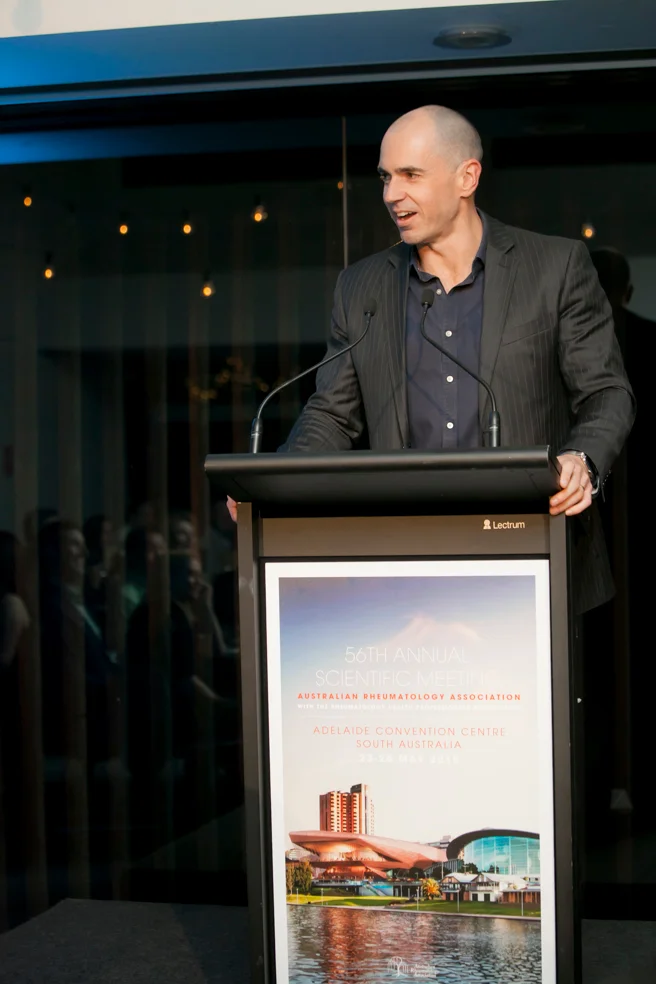

Rheumatologist & Epidemiologist
Samuel Whittle
Sam Whittle is a senior consultant rheumatologist at the Queen Elizabeth Hospital in Adelaide, a senior lecturer at the University of Adelaide, and an adjunct senior research fellow at Monash University.
His work centres on getting good evidence into practice. He serves on the executive committee of the Australia & New Zealand Musculoskeletal Clinical Trials Network (ANZMUSC) and is an ANZMUSC Practitioner Fellow. He has helped to develop the Australian Living Guidelines for inflammatory arthritis and juvenile idiopathic arthritis, which are updated continuously as new evidence emerges.
He is the founding editor-in-chief of the Australian Rheumatology Journal, a diamond open-access journal owned by the rheumatology community. He is a past president of the Australian Rheumatology Association and serves on the executive committee of the Asia-Pacific League of Associations for Rheumatology (APLAR).